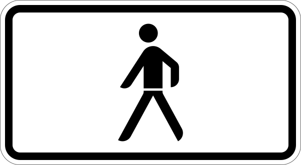
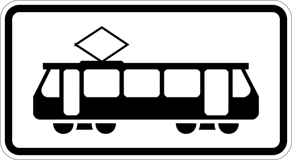

<ng-container *ngIf="(lanes$ | async) as lanes">
  <table class="table table-sm table-striped">
    <thead>
    <tr>
      <th scope="col"
          class="fit">Fahrstreifen
      </th>
      <th scope="col"
          class="fit">Typ
      </th>
      <th scope="col"
          class="fit">Spuren
      </th>
      <th scope="col">Warteliste</th>
    </tr>
    </thead>
    <tbody>
    <tr *ngFor="let lane of lanes; trackBy: intersectionHelper.trackLane">
      <th scope="row"
          class="fit">{{ lane.name }}</th>
      <th [ngClass]=[intersectionHelper.phaseColor(lane)]
          scope="row"
          class="fit text-center">
        
        
        
      </th>
      <td [ngClass]=[intersectionHelper.phaseColor(lane)]
          class="fit align-middle">
        
      </td>
      <td>
        <app-tooltip *ngFor="let train of lane.waitingTrains"
                     [text]=[carIcon]
                     [tooltip]=[train]>
        </app-tooltip>
      </td>
    </tr>
    </tbody>
  </table>
</ng-container>
